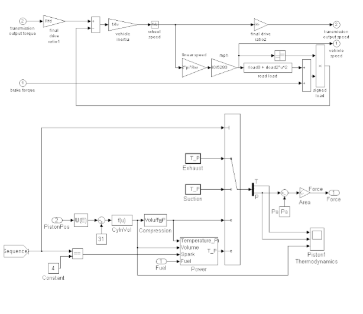

ARXDE® è una risorsa specializzata, costruita sulla nostra esperienza e passione per il campo della matematica e dell'ingegneria.
La nostra riconosciuta competenza in questi ambiti ci consente di sviluppare programmi informatici per l'elaborazione dei dati, in grado di soddisfare le esigenze più specifiche.
Pubblichiamo articoli, libri e partecipiamo a varie conferenze utilizzando le risorse di elaborazione dati e immagini ARXDE™ per la creazione di modelli tridimensionali, rispettivamente per l'integrazione dell'intelligenza artificiale e dell'apprendimento automatico nella tecnologia di lavoro con grandi volumi di dati.


Archivio di ingegneria
Un diario infinito di soluzioni ingegneristiche, riconosciuto a livello internazionale e portato avanti con il tuo aiuto.
Archivio scientifico
Una raccolta di argomenti di ricerca provenienti da diversi campi della scienza. Una vera fonte di ispirazione per i futuri ricercatori e non solo.
Articoli:


Servizi di ricerca scientifica e di ingegneria.
Benefici di ARXDE®:
⬦ Consulenza tecnologica e progettazione di prototipi partendo da modelli matematici simulati al computer.
⬦ Sviluppo e sperimentazione di metodi di calcolo, algoritmi e software.
⬦ Studi avanzati nel campo della meccanica che ci consentono di offrire servizi di ricerca matematica e scientifica soprattutto nel campo della tecnologia dei veicoli autonomi e dell'ingegneria meccanica.
⬦ Gestione progetti informatici.


- ® -- imaginea 8">


Servizi di sviluppo e test.
La gamma di servizi innovativi ARXDE® comprende:
⬦ La progettazione di modelli matematici, sistemi di misura, strumenti scientifici e tecnologici.
⬦ Progettazione e sviluppo di metodi di prova e analisi nel settore automobilistico e nell'ingegneria meccanica.
⬦ Servizi di analisi scientifica assistita da computer.
⬦ Servizi di ricerca e sviluppo, test scientifici e ingegneria assistita da computer, nonché servizi di test scientifici di laboratorio.
Servizi editoriali.
La gamma dei servizi editoriali ARXDE® comprende:
Pubblicazione di materiali accessibili tramite banche dati o Internet.
Scrittura e pubblicazione di testi nell'ambito dei servizi di progettazione e consulenza ingegneristica.
Pubblicazione di riviste basate sui metodi di misurazione e test sviluppati.
Notizia
Se vuoi essere incluso nella lista di posta elettronica del server ARXDE®, puoi contattarci a: info@arxde.ro
Contatto
E-Mail: info@arxde.ro
Posizioni: Timişoara, Deva